Includes 5 content items, starting with Lesson 1a: Success, Lesson 1b: Feedback, Lesson 2: Environments.
Module Content
Lesson sequence
1
Reading
Module 1: Understanding Self as Learner
1.1 How We Learn
In this section of Lesson One you are going to explore...
Success with Learning Strategies
Growth vs Fixed Mindsets
Students in their learning have two kinds of knowledge working for them:
their knowledge of their language
their awareness of learning strategies and how they use them to learn and understand information
Students have differences in ability, motivation, and effort; but a major difference is in their knowledge of and skill in using learning strategies to their benefit.
Successful Learner? or Struggling Learner?
Successful learners are able to identify the best strategy for a specific task. Struggling learners have difficulty choosing the best strategy for a specific task.
Successful learners are flexible and adopt a different strategy if the first one doesn’t work. Struggling learners have a limited variety of strategies and stay with the first strategy they have chosen even when it doesn’t work.
Successful learners have confidence in their learning ability. Struggling learners lack confidence in their learning ability.
Successful learners expect to succeed, fulfill expectations, and become more motivated. Struggling learners expect to do poorly, do not meet expectations, and lose motivation.
Learning strategies can show that your school success (or lack of it) is due, in part, to the way you go about learning. You can learn how to use strategies more effectively and become more self-reliant and better able to learn independently. This will help you take more responsibility for your own learning and your motivation will increase because you will have increased confidence in your learning ability.
Although there are many differences between struggling learners and successful learners, that doesn’t mean that all successful or struggling learners are the same as each other. There are many different strategies that can be used to be a successful learner and some strategies will work better for you than others. Becoming a truly successful learner is about finding what strategies work for you.
Think about these strategies - which ones do you use?
I draw pictures or diagrams to help me understand.
I make up questions that I try to answer.
When I am learning something new in a subject, I think back to what I already know about it.
I discuss what I am learning with others.
I practice things over and over until I know them well.
I think about my thinking, to check if I understand the ideas in a course.
When I don’t understand something, I go back over it again.
I make a note of things that I don't understand very well so that I can follow them up.
When I have finished an activity, I look back to see how well I did.
I organize my time to manage my learning.
I make plans for how to do the activities.
Students who use fewer of these strategies have more difficulty coping with their schoolwork.
Know the Percentages
We Retain:
10 % of what we read
20% of what we hear
30% of what we see
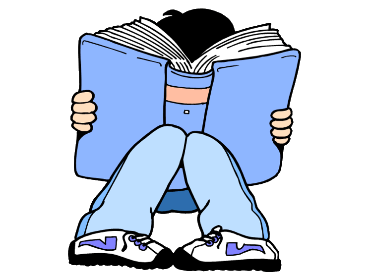
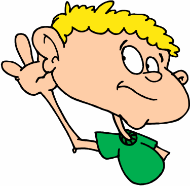
50% of what we see and hear
70% of what we talk about with others
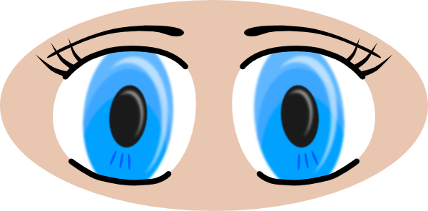
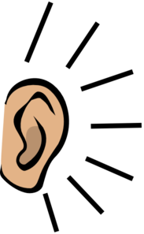
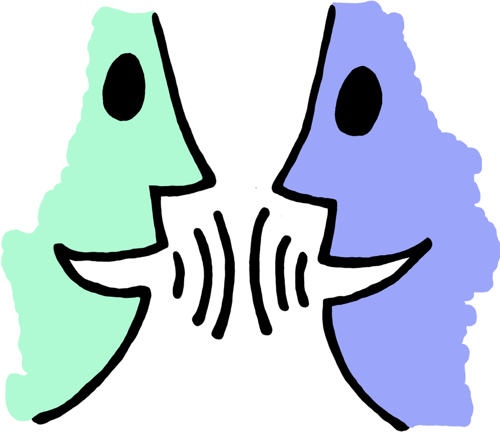
80% of what we experience personally
95% of what we teach to others
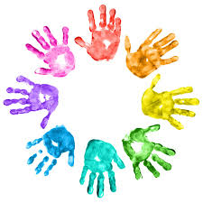
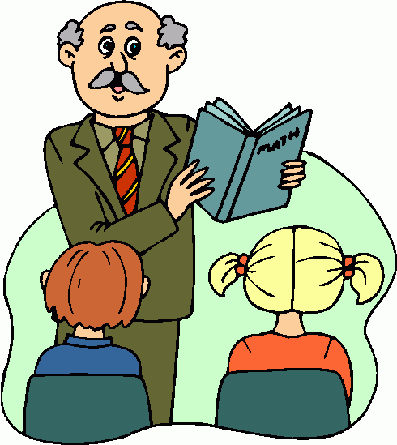
Does this surprise you? What does it tell you about learning?
Stages of Information Processing in Learning
Learning occurs in stages within a feedback loop.
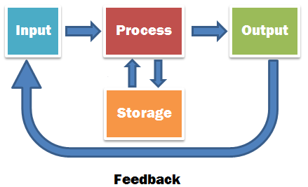
Input: new information is presented (i.e. textbook reading, lecture, tutorial, demonstration, video, experiment, experience)
Process: how you think about the information (i.e. motivation, relation to prior knowledge, discussion, analysis, synthesis, cause and effect, compare and contrast, categorize)
Storage: how you remember or store the processed information for later use (short-term or long-term memory, study groups, memory devices, flashcards, mock tests, skill practice)
Output: how you demonstrate your understanding of the information (test, quiz, questions, essay, project, skills demonstration, creative expression)
Feedback: the positive or negative reinforcement of the output (grades, reviews, error correction, suggestions for improvement, natural consequences)
As students, you can learn about and advocate for strategies that will work for you in each of the information processing stages. You just have to be open to learning about yourself and willing to try out new ideas and make changes to approach.
Rethinking Learning Styles
You may have heard in the past that there are three types of learners: Visual, Auditory and Kinesthetic.
Visual - by seeing and reading
Auditory - by hearing and listening
Tactile/Kinesthetic - by touching, moving, and doing
You may have also heard that the best way to learn is to make sure that you’re always learning using your personal style. By adapting your learning strategies to fit with your preferred style, you will learn better and more efficiently. Well, the truth about learning styles is...that it’s not true at all!
Scientists have done lots of research on this topic and there is almost no evidence that using a person’s “learning style” to teach them provides any benefit to their learning. In fact, sometimes the opposite can happen! An article by Amber and Andy Ankowski from pbs.org states that “research from the University of Southern California shows that although people often enjoy a particular method of instruction, it may end up being the one that teaches them the least. That’s because learning can be hard—and sometimes we need to push past what’s easy and familiar to achieve real academic success.”
Watch the following video for an explanation on why learning styles don’t really help us learn.
Understanding Mindset
Do you think that some people are just “naturally good” at school and some people aren’t? Or do you believe that success is a matter of time and effort? Your ideas about whether learning is a matter of skill or effort is a reflection of your learning mindset.
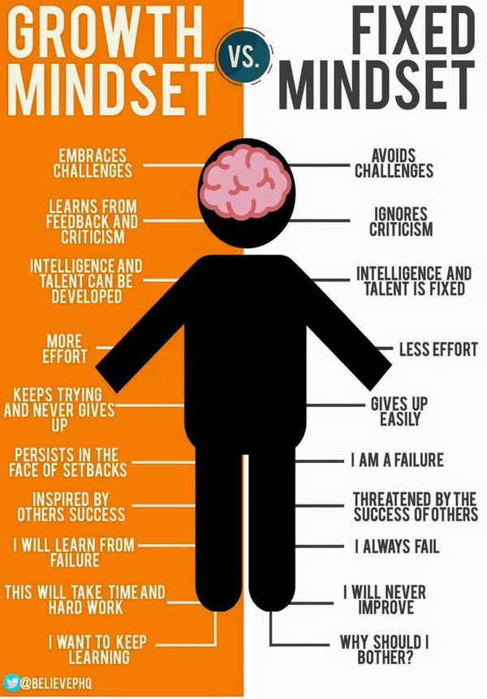
Carol Dweck is a psychologist who first became interested in the idea of mindsets. She wrote a book called Mindset: The New Psychology of Success that suggests that people’s success or failure in learning has a great deal to do with their beliefs about themselves.
Carol made a distinction between two types of learners: those with growth mindsets and those with fixed mindsets. According to Dweck, “In a fixed mindset, people believe their basic qualities, like their intelligence or talent, are simply fixed traits. They spend their time documenting their intelligence or talent instead of developing them. They also believe that talent alone creates success—without effort.”
Dweck’s research suggests that students who have adopted a fixed mindset—the belief that they are either “smart” or “dumb” and there is no way to change this—may learn less than they could or learn at a slower rate. People with fixed mindsets also shy away from challenges, since poor performance might either confirm they can’t learn, if they believe they are “dumb,” or indicate that they are less intelligent than they think if they believe they are “smart”. Dweck’s findings also suggest that when students with fixed mindsets fail at something, as they inevitably will, they tend to tell themselves they can’t or won’t be able to do it (“I just can’t learn Algebra”), or they make excuses to rationalize the failure (“I would have passed the test if I had had more time to study”) .
Alternatively, “In a growth mindset, people believe that their most basic abilities can be developed through dedication and hard work—brains and talent are just the starting point. This view creates a love of learning and a resilience that is essential for great accomplishment,” writes Dweck. Students who embrace growth mindsets—the belief that they can learn more or become smarter if they work hard and persevere—may learn more, learn it more quickly, and view challenges and failures as opportunities to improve their learning and skills.
Watch the following video that summarizes ‘growth mindset’.
Do you think that you have a fixed or growth mindset? It’s time to examine your own beliefs about learning.
2
Reading
Module 1: Understanding Self as Learner
1.1b Setbacks and Feedback
In this section you are going to explore...
Dealing with Setbacks
Receiving Feedback
Dealing with Setbacks
Failure is an inevitable part of the learning process. Everyone will encounter obstacles and barriers in their life. In fact, some of the most successful people in the world had huge failures and setbacks in their lives before becoming successful.
Jack Ma is a Chinese business magnate, investor, and philanthropist. He is the co-founder and executive chairman of the Alibaba Group, a multinational technology conglomerate. As of August 2018, he is one of China's richest men with a net worth of US$38.6 billion, as well as one of the wealthiest people in the world.
It took Jack four years to pass the College entrance exams. After graduating he applied for 30 jobs and was rejected by all of them. He even applied to KFC for a job. Twenty-four people applied, and twenty-three people were accepted, Jack was the only one who was rejected. He applied to Harvard Business School 10 times and was rejected every time.
Stephen King is an American author of horror, supernatural fiction, suspense, science fiction and fantasy. His books have sold more than 350 million copies, many of which have been adapted into feature films, miniseries, television series, and comic books. King has published 58 novels, including seven under the pen name Richard Bachman, and six non-fiction books. He has written around 200 short stories, most of which have been published in book collections.
King’s first published novel Carrie was rejected 30 times by publishers. He himself thought the story was so bad that he actually threw the original manuscript in the trash. His wife recovered it and encouraged him to finish the book and to send it for publication. It became the book that launched his career.
Katy Perry is one of the best-selling music artists of all time, having sold more than 40 million albums and over 100 million records globally throughout her career. Perry has received many awards, including four Guinness World Records, five American Music Awards, a Brit Award, and a Juno Award, and has been included in the annual Forbes lists of highest-earning women in music from 2011–2018. Her estimated net worth as of 2016 is $125 million. Perry also began serving as a judge on American Idol in 2018.
Katy Perry originally started off as a gospel singer. She signed with Red Hill Records at the age of 17 but her first album only sold 200 copies and then the label went out of business. In 2003 she was signed to Island Def Jam, which was also a contract that was terminated. In 2004 she signed with Columbia Records who sought to make her the lead vocalist in a band called The Matrix. However, that deal also fell through when Columbia Records shelved the project at about 80% completion.
Failure is a part of life. Adversity and stress affect everyone but how you choose to deal with it makes all the difference.
When you encounter negative feedback, your first emotions and reactions might be very strong. You may feel sad, angry or frustrated. You might feel really down on yourself or you might even lash out at others.
You should accept that it’s expected to feel these strong feelings after a setback. These feelings are our mind’s natural reactions to a negative event. However, if we act on these feelings or impulses right away we might make some choices that we later regret. An article in Psychology Today says that it’s best to “Allow yourself to feel all your emotions, but resist acting on them while you're upset.” We can’t always control how we feel but we can control how we choose to act on those feelings.
On the other hand, it’s also not healthy to “bottle up” these negative feelings. Choosing not to act is different than choosing to ignore what happened. If you just try and suppress these emotions, you’ll find that you’ll either just have a huge outburst later or just end up feeling worse for a longer period of time. Lifehacker has some great tips for some healthy ways to cope with these negative feelings:
Set aside some time: It's okay to feel like you've hit rock bottom. Completely ignoring what happened isn't helpful, so set aside a specific amount of time to wallow as much as you want. Take some time to be angry, upset, and frustrated so you can get it all out. If it's something small, all you may need is an hour to pace around or cry in a pillow. For something larger, give yourself a full 24 hours to let it all out and wake up the next day with a clean slate. If you need more than a day, that's okay, but make sure it's an amount of time set by you and that you stick to it. You get that time to be as mopey as you want, but when it's over, move on.
Talk about it: Talk to somebody you know about how you're feeling. It's well known that just talking about something can make you feel better. Take a load off and express yourself. Chances are whoever you talk to will try to make you feel better, but even if they don't, saying how you feel out loud puts that information out somewhere besides your brain.
Don't let it become a part of your identity: Failure is something that happens, not something you are. Susan Tardanico at Forbes explains that just because you haven't found a successful way to do something doesn't mean you are a failure. Be careful not to blur the lines between making mistakes and being someone who only makes mistakes. Our actions may define us, but our failures do not. The actions you take to move past failure and reach success will define you in the end.
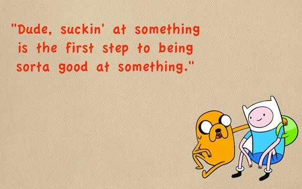
Now that we’ve moved past the initial strong feelings after a setback, how can we get back on track? Even after dealing with the first strong feelings, feelings of inadequacy can linger. It’s important not to let failures and setbacks define us. So how do we turn our failures into stepping stones instead of letting them block us from reaching our goals? The best way is to change our mindset about failure. By adopting a growth mindset, we can choose to see failure as an inevitable part of the learning process.
The happiest and most successful people know that:
Failure is an integral part on the way to success and self-realization.
Whenever you step outside the comfort zone and whenever you try something new, failure becomes inevitable.
Each failure brings you one step closer to reaching your goals.
Failure is a great teacher and it allows you to learn some of the most valuable life lessons.
Each failure makes you stronger, bigger and better.
Making mistakes is not a big deal as long as you learn from them and avoid repeating them.
Failure teaches you that a certain approach may not be ideal for a specific situation and that there are better approaches.
Successful people will never laugh at you or judge you when you fail because they have already been there, and they know about the valuable lessons you can learn from failure.
No matter how often you fail, you are not a failure as long as you don’t give up.
Each time you fail, your fear of failure becomes smaller, which allows you to take on even bigger challenges.
One thing is absolutely sure - if you REALLY want to succeed in life, if you want to do something special, if you want to fulfill your dreams… failure becomes inevitable. In order to bounce back from setbacks and adversity, having a positive attitude and being optimistic is key to success.
Accepting Feedback
Feedback is information that we receive about our progress or actions. You can receive feedback from your teachers, your friends or from strangers. What are some examples of feedback?
Getting a test back with a mark of 80%
Your parents tell you that when you do the dishes they aren’t very clean
Your teacher writes comments on a draft of your essay
Your friend complains, “You always cut me off when I’m talking!”
Feedback can be both positive and negative. In order to learn and grow we need to accept both types of feedback from other people. Good feedback is usually easy for us to accept and helps us reaffirm that we are on the right track. Positive reinforcement makes us feel good and motivates us to keep going. But what about when we receive negative feedback or criticism?
Just like with setbacks, negative feedback usually comes with a lot of strong feelings. We may feel judged, upset or angry when we receive negative feedback from others. However, if we can get past our initial reactions, we can often learn a lot from negative feedback.
Who can give feedback?
Valuable feedback can come from many different people in our lives. In general, it’s good to seek feedback from people who have an expertise that’s greater than yours and who have your best interests at heart. For example, if you are writing an essay it’s likely that you’ll seek feedback from your English teacher. If you accept feedback from the wrong people, it may not be helpful and might lead you off track. For example, if you are writing an essay you may not want to seek feedback from your younger sibling! To ensure that we’re getting valuable feedback, we can ask ourselves the following questions:
Is this person trustworthy?
Does this person have my best interests at heart?
Is this person genuinely trying to help me?
Is this person an expert in what they are advising me about?
When is feedback not helpful?
Constructive criticism is negative feedback that’s intended to help you improve. Good criticism should show you what you are doing incorrectly and how to make changes in the future. Although this kind of criticism can hurt a little, it’s done with the intention to help us improve and should be taken as helpful advice.
When you receive criticism that’s designed to belittle you or make you inferior without any reasonable advice on how to improve, that kind of criticism is not helpful. A criticism that’s just said to be hurtful can generally be ignored. Take a look at the following table for a summary of the differences between positive and negative feedback.
Positive Feedback (Constructive Criticism)
Negative Criticism (Non-Constructive Criticism)
Focuses on the skill, or actions
Focuses on the person
Does not blame or judge
Blames or judges the person
Provides helpful suggestions for improvement
Does not provide suggestions
Tries to help you improve
Tries to make you feel inferior
“I noticed...and you might want to try…”
“You’re terrible at this!”
3
Reading
Module 1: Understanding Self As Learner
1.2 Learning Environments
In this section of Lesson One you are going to explore...
Learning Environments
Individual vs. Group Learning
Active Listening
Individual vs. Group Learning
There are many differences between individual and group learning environments. Individual learning includes activities such as writing essays, completing assignments and taking notes. Group learning includes activities such as group projects or discussions.
It’s very important to be able to work in a group learning environment. Working in a group requires you to use interpersonal skills in order to be successful. These include skills like communication and conflict-resolution. Group learning is a great way to build these useful skills so that you can apply them to your life after school.
The benefit of group work is that you are able to get more ideas and skills from a diverse group of learners than from a single person. Each person adds their strengths to the group and you can share the workload so that each person has less to do overall. Watch the following video by UBC Leap for tips on how to be effective while working in groups:
Active Listening
One of the most important parts of an effective group is to respect and value the viewpoints of others. Remember that other people have different backgrounds than you and will also have different opinions. By listening and learning from others, you will work more effectively in a group setting.
So how do we ensure that we are respecting and understanding the viewpoints of others? One is by practicing active listening. Active listening is a skill that is used to ensure that we show concern for the viewpoints of others. Smallgroups.ca has published some great tips for active listening that are summarized below.
Give your full attention to the person speaking. Maintain eye contact and focus on them as they share. A person communicates a lot more through their body gestures than they do through words. When a group participant is passionate about what they're sharing, let them fully vent their fears, frustrations, and other important feelings. You can show you're really interested in what they're saying by giving subtle affirmations like nodding your head.
Resist the urge to interrupt. Make it your priority to be present with the person speaking and avoid the temptation to rehearse your response. Learn to take your time to think about what you're hearing, strive to understand it, and then give appropriate and timely feedback to the one sharing.
Identify the root issue being discussed and look for main ideas. Listen for the most important points the speaker is trying to get across. They tend to be mentioned at the start or end of a talk or repeated a number of times. Pay special attention to phrases like, "My point is …" or "The thing is …." For example, you could say: "John, you seemed to feel strongly about … tell me more about why you don't like that."
Stay focused on the person speaking. It can be tempting to dive into a story of your own to show how you relate, but it's important to let them finish speaking first. It is okay to reference something similar that happened to you, but be sure to swing the attention back on to them quickly. Your diligence in staying focused will help the person sharing feel understood and genuinely cared for. The best guard against a person not feeling heard or respected is a supportive ear.
Reflect back your understanding of what they're saying. In your own mind, summarize what the speaker has said and then reframe what you heard so they know that you're hearing them. Compassionately acknowledge and ask about (don't diagnose) the emotions they appear to be expressing. For example: "It sounds like the hurt from that tough experience still affects you at times. How has this season been for you in dealing with the issues that came out of that?"
Being a great listener doesn’t mean that you have to agree with what everyone says, but it does mean allowing everyone to express their viewpoint and be heard. Once you have truly heard and understood someone’s viewpoint, you can then choose the best way to move forward as a group.
4
Reading
Module 1: Understanding Self as Learner
1.3 Self-Advocacy and Empowerment
In this section of Lesson One you are going to exlore...
The Steps to Self-Advocacy
Learning Needs and Accommodations
SELF-ADVOCACY AND EMPOWERMENT
Let’s start this section by examining two very important words: Self-Awareness and Self Advocacy
What do they actually mean?
What is Self-Awareness?
The word “self” means “me”, and the word “awareness” means to know something or to be informed of something. So “self-awareness” refers to a person knowing about himself or herself. This includes knowing your needs, preferences, strengths and barriers to learning. By being aware of yourself you will be better able to focus your efforts for maximum benefits.
What is Self-Advocacy?
What about “self-advocacy”? The dictionary defines “advocacy” as “the act of pleading or arguing in favor of something such as a cause, idea, or policy.” So, at its heart, “self-advocacy” really is about learning to speak up on your behalf and asking for what you need.
In elementary and middle schools, parents are generally students’ biggest advocates. But as students enter the higher grades, it becomes increasingly important that they are able to express their own needs in a positive way. Self-advocacy is all about learning to take charge and be more independent. It builds self-confidence. Confident students feel better about themselves, take more risks, ask for the help and clarification they need, and consequently do better in school and in life.
The following story is a good example of self-advocacy.
Lucy is a high school student who wears contacts. Even though she wears contacts, she cannot see small things from far away. When Lucy arrived at Algebra class on Monday, her teacher had made a new seating chart that left Lucy sitting at the back of the room. Lucy stayed after class to explain to her teacher that she needed to sit closer to the front because she could not see the board even when she wears her contacts.
Learning self-advocacy skills can help students deal with current challenges and the ones they’ll face in the future. But self-advocacy isn’t easy for many students. Teenagers often feel awkward or even guilty about asking for help or for an accommodation. That’s especially true if students have learning or attention issues and feel embarrassed about their situation. Since they often have limited confidence in their abilities and low self-esteem, they are reluctant to ask questions in class or to request extra assistance, they don’t want to be thought of as “stupid” or “disruptive.” They also don’t want to be seen as getting “special treatment”.
As with any valuable skill, practice is an important part of learning self-advocacy skills. Practice can also help students feel more comfortable about asking for help. Improving and practicing self-advocacy will be the focus of this module.
Tips for Developing Self Advocacy Skills
The skill of self-advocacy can be broken down into a few key elements:
You understand your needs and preferences. (This is part of self-awareness.)
You know what help or support will address those needs, like tutoring or classroom accommodation.
You can communicate your needs and preferences to teachers and others appropriately.
Step One: Understanding learning needs and preferences
Young people need to understand how they learn and be able to express this information in “plain English.” Students must be aware of their strengths, needs, challenges, successes, and preferences in the learning process before they can effectively advocate for themselves. If students have been diagnosed with a specific learning disability or if they have a medical condition that affects learning, they should find out as much information about their situation as possible.
Step Two: Knowing what supports are needed to be successful
Students must become familiar with the strategies that help them succeed, available accommodations that bypass their limitations, and the type of environment that facilitates their learning. This information can be gathered by talking to former and current teachers, tutors, and/or guidance counsellors, reflecting on past learning challenges and successes, and reviewing any specialized assessment results that may have been done in the past.
Step Three: Communicating needs appropriately
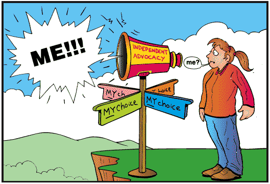
A key component of self-advocacy is knowing how to communicate this self-knowledge about the learning process to others. Young people must be clear in their requests and prepared with explanations. The manner in which they communicate can either get others on-side or push them away. High school is a great place to begin practicing communication with teachers and other school staff. Students should be encouraged to set up conferences with their teachers. This gives them an opportunity to discuss what’s going well and what isn’t, to get feedback, and to work out a plan to do better.
My Learning Profile
Every person is different. Knowing yourself is a key step to becoming a successful learner. By understanding your strengths, weaknesses and preferences for learning you can better select strategies that help overcome your barriers and enhance your talents. This is part of being a self-aware student. Here are some examples of learning profiles below:
Samira is a high school student. She loves reading books, especially fantasy and sci-fi. Because she spends so much time reading, she finds that writing in English class comes easily to her. She can easily analyze texts and actually enjoys writing essays and participating in English class. She loves having group discussions and sharing her thoughts about books. However, Samira struggles in Biology class because she finds it hard to memorize information. Although she likes her teacher and finds science interesting, she just can’t seem to remember all of the information. Even though she pays attention in class, she finds that she doesn’t do very well on tests. Because of this, she often feels discouraged and avoids studying. Samira often thinks to herself “Why bother studying? I’ll just do bad anyways. I should just focus on English, which is what I’m good at.”
Learning Profile: Samira
Strengths:
Reading, writing, group discussion
Challenges:
Memorization
Interests:
Books, Science
Experiences:
Sees failure as an endpoint, not an opportunity to learn. Feels a disconnect between effort and results
Arjun is a junior high student. He has a great sense of humor and has a lot of friends at school. He has two older brothers who have always had perfect grades. Arjun feels that his parents often compare him to his siblings and are disappointed when he doesn’t do as well as his brothers academically. Arjun has always struggled with math and even when his parents force him to study, it never seems to make much sense. His biggest passion is music; he loves to play guitar and even writes some of his own songs. But his parents don’t approve of his music and often complain that he should spend less time playing guitar and more time studying. At school, Arjun doesn’t want to ask questions because he doesn’t want his teachers to think he’s stupid. He wants to pursue a music career and doesn’t see the point of having to learn math at all. He hates that his parents always compare him to his brothers, especially because it just seems like it’s easier for them to do well in school.
Learning Profile: Arjun
Strengths:
Music, Creativity
Challenges:
Math, Afraid to ask for help
Interests:
Becoming a musician, writing music
Experiences:
His parents expect him to be like his brothers. They don’t recognize his gifts. He doesn’t want to be seen as stupid.
Once you have created your learning profile, you can more easily see what your barriers are. Then you can look for resources to help you overcome these barriers. Based on their learning profiles, how do you think Samira and Arjun could become more successful learners?
Now that you have identified your learning barriers using your learning profile, you can start to identify some resources and strategies to overcome your barriers. Although you may not realize it, there are likely a number of supports and that can help you to be successful.
Accommodations for Learning
Everyone has areas of strength but also areas where we are still developing our skills. In some cases, we require some extra things that help us to be more effective learners. For example, if you find that you have trouble making it to class on time, you may need to set yourself some alarms on your phone to remind you when it’s time to start walking to the classroom. If you find yourself struggling to fall asleep, you may need to use a white noise device that sometimes helps people fall asleep easier.
Accommodations are things that we use to help us meet our needs. Some needs will become strengths over time with practice and experience. For example, you may one day find that you come to class on time without needing your alarms to remind you. Some needs we will use forever, for example sitting at the front of the classroom so that we can hear and see the teacher better. Some other examples of accommodations would be:
Sitting at the front of the class, so that you can focus more easily
Having more time during tests, or writing in a separate space
Having a reader or a scribe (someone who writes for you)
Having notes printed for you, so you can follow along
Using audio recordings
Your needs and accommodations will often change over time. You may find that you have new needs that come up as your situation and life changes. You might also find that your accommodations no longer work as well as they used to. Meeting our needs is a constantly evolving process.
It looks something like this:
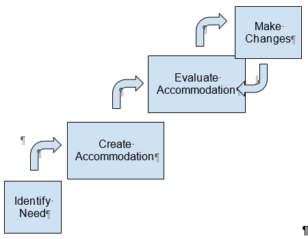
Accommodations are designed to help students who have specific needs to overcome their personal learning barriers. It’s important to recognize that your teachers are here to help you demonstrate your highest level of achievement. Recognize that there is a difference between equality and equity. Equality means that everyone gets the same thing, whereas equity means that everyone gets what they need. For example, everyone who writes a diploma exam can now request extra time (equality). A particular student suffers from extreme test anxiety, so they write in an isolation room rather than in the gym (equity).
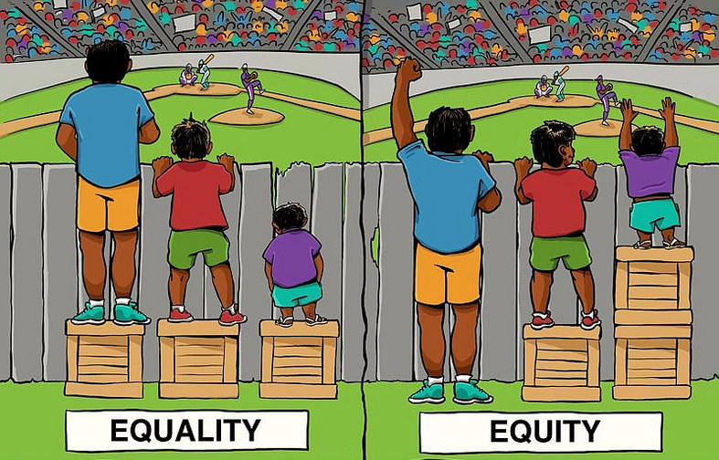
Once you know what your specific learning needs are and have thought about what accommodations and strategies might be helpful in the classroom and at school, it is time to SPEAK UP! Becoming a stronger self-advocate isn’t easy for many students. You may feel awkward or even guilty about asking for help or for an accommodation. But as with any valuable skill, practice makes perfect. Practice can help you develop self-advocacy skills and help you feel more comfortable about speaking out.
You can start doing this by:
Sharing your thoughts and opinions in class, at the dinner table, at your place of worship, etc.
Asking questions if you don’t understand something your teacher or counsellor says
Talking with adults and your friends about planning your classes, activities and life after graduation
Standing up for your rights if you think they’re being violated
When appropriate, asking for accommodations at school or at work
Where to Find Support
Once you have identified your needs, it’s important to know where you can seek support. There are many places where students can get the support that they need in order to help them overcome a variety of barriers. Often, the first place that people seek support when they are struggling is from friends and family. These people in our lives can help support us emotionally by listening to our issues and being empathetic.
Beyond the support of our friends and family, there are other supports that we can use to help us overcome our barriers.
Therapists and other mental health professionals
Can help us develop coping strategies for mental health issues such as test anxiety
School Counselors
Can help us get testing for various learning issues (i.e. ADHD, learning disability etc.)
Community-based support groups
Help us connect with others in similar circumstances
Books and research journals
Provide us with up-to-date research and information to help support our needs
Online resources such as websites or support groups
Provide us with information and strategies to help meet our needs
Connect us with others in similar circumstances
Communication Practices: Bridges and Barriers
One of the most important elements of self-advocacy is knowing how to communicate your knowledge about yourself and your learning process to others. The way in which you communicate can either get others on your side or push them away. You may need help preparing ahead of time, planning what you will say, and making notes to take with you.
High school is a great place to begin practicing communication with teachers and other school staff. Ask to meet with your teacher(s). This will give you an opportunity to discuss what’s going well and what isn’t, to get feedback, and to work out a plan to do better.
All of us have likely been in situations where communication has broken down and we have felt misunderstood and unheard. On the other hand, nothing is as self-affirming as walking away from a conversation feeling positive and hopeful. Examine the following table to see if you recognize any of these communication barriers and bridges.
Communication Barriers
Communication Bridges
Not listening
Listening carefully
Yelling or talking loudly
Letting the sender know you are listening through body language or making encouraging movements or noises, such as, “Yes” or “oh”
Getting angry
Making eye contact
Not saying honestly how you feel
Trying to understand how the other person feels
Sulking or pouting
Saying how you feel, using “I” statements
Lying
Offering possible solutions, if asked
Being sarcastic
Repeating what the speaker has said
Criticizing or putting people down
Clarifying what has been said to make sure you understood correctly
Name calling
Negative nonverbal messages (for example, frowning, rolling eyes)
Interrupting
Accusing or blaming
Listen to “Assertive Communication - Three V’s of Communication” to learn more about effective communication strategies.
Actions and expressions fit with words spoken, firm but polite and clear messages, respectful of self and others. “That’s a good idea and how about if we do this too…” or “I can see that, but I’d really like…”
Sarcastic, harsh, always right, superior, know it all, interrupts, talks over others, critical, put-downs, patronizing, disrespectful of others. “This is what we’re doing, if you don’t like it, tough.”
Beliefs
Has no opinion other than the other person/s are always more important, so it doesn’t matter what they think anyway.
Believes or acts as if all the individuals involved are equal, each deserving of respect, and no more entitled than the other to have things done their way.
Believe they are entitled to have things done their way, the way they want it to be done, because they are right and others (and their needs) are less important.
Makes body smaller - stooped, leaning, hunched shoulders
Relaxed, open, welcoming
Makes body bigger - upright, head high, shoulders out, hands on hips, feet apart
Hands
Together, fidgety, clammy
Open, friendly, appropriate gestures
Pointing fingers, making fists, clenched, hands on hips
Consequences
Give into others, don’t get what we want or need, self-critical thoughts, miserable
Good relationships with others, happy with the outcome and willing to compromise
Make enemies, upset others and self, feel angry and resentful
Consider the following scenario:
Geneva has been standing in line for over two hours to buy a concert ticket. The rule is, one person, one ticket. Her feet are killing her and she knows she is in trouble with her mom, who expected her home by now. But there are only five people left in front of her and she is sure she will get a ticket.
Out of nowhere, two girls from school walk up, make a big deal about meeting up with their friend who just happens to be standing in front of Geneva, and take places in line in front of her.
What do you think Geneva should do?
Passive Response: Behaving passively means not expressing your own needs and feelings or expressing them so weakly that they will not be addressed. If Geneva behaves passively, she will stand in line and not say anything. She will probably feel angry with the girls and herself. If the ticket office runs out of tickets before she gets to the head of the line, she will be furious and might blow up at the girls after it’s too late to change the situation.
A passive response is not usually in your best interest, because it allows other people to violate your rights. Yet there are times when being passive is the most appropriate response. It is important to assess whether a situation is dangerous and choose the response most likely to keep you safe.
Aggressive Response: Behaving aggressively is asking for what you want or saying how you feel in a threatening, sarcastic or humiliating way that may offend the other person(s). If Geneva calls the girls names or threatens them, she may feel strong for a moment, but there is no guarantee she will get the girls to leave. More importantly, the girls and their friend may also respond aggressively, through a verbal or physical attack on Geneva.
An aggressive response is never in your best interest because it almost always leads to increased conflict.
Assertive Response: Behaving assertively means asking for what you want or saying how you feel in an honest and respectful way that does not infringe on another person’s rights or put the individual down. If Geneva tells the girls they need to go to the end of the line because other people have been waiting; she will not put the girls down but merely state the facts of the situation. She can feel proud for standing up for her rights. At the same time, she will probably be supported in her statement by other people in the line. While there is a good chance the girls will feel embarrassed and move, there is also the chance that they will ignore Geneva and her needs will not be met.
An assertive response is almost always in your best interest since it is your best chance of getting what you want without offending the other person(s). At times, however, being assertive can be inappropriate. If tempers are high, if people have been using alcohol or other drugs, if people have weapons or if you are in an unsafe place, being assertive may not be the safest choice.
When you are talking to teachers, assertive communication is the key to success. By communicating assertively, we are able to express both positive and negative ideas and feelings in an open, honest, and direct way. It recognizes our rights while still respecting the rights of others. Assertive communication allows us to take responsibility for ourselves and our actions without judging or blaming other people and it also allows us to constructively confront and find a mutually satisfying solution where conflict exists.
There are six main characteristics of assertive communication. These are:
Body posture: open body postures provides a welcoming message
Gestures: appropriate gestures help to add emphasis
Voice: a level, expressive tone is convincing and acceptable and is not intimidating
Timing: use your judgement to maximize receptivity and impact
Content: how, where and when you choose to self-advocate is just as important as what you say
The Importance of “I” Statements
Part of being assertive involves the ability to appropriately express your needs and feelings. You can accomplish this by using “I” statements. “I” statements:
Indicate ownership
Do not attribute blame
Focus on behaviour
Identify the effect of behaviour
Are direct and honest
Strong “I” statements have three specific elements: behaviour, feeling and tangible effect. (consequence to you)
Example: She said: “I feel frustrated (feeling) when you are late for meetings. (behaviour) I don’t like having to repeat information.” (consequence)
Having the ability to use I statements effectively can help you approach teachers confidently when you are ready to self-advocate. They can allow you to express your concern and get your point across without putting the teacher on the defensive.
And lastly, when self-advocating, remember to SHARE!
Sit up straight Have a pleasant tone of voice Activate your thinking
Tell yourself to pay attention and participate
Tell yourself to listen and compare ideas
Relax
Don’t look uptight
Tell yourself to stay calm
Engage in eye contact
Remember!
You have the power! Being a self-advocate is rarely easy, but never forget that you deserve the life you want, and you have the power to make it happen. Most importantly never, EVER give up.
Balance. Being a strong self-advocate is all about balancing assertiveness and respectfulness. You have a right to speak up for what you want and need, but others are more likely to listen and work with you if you approach them as partners, not enemies.
Practice makes it easier. If you get nervous and worry that your words won't come out right when you have to speak up for yourself, try practicing what you will say ahead of time. Writing down what you want to say or talking it through with a friend can help you feel more confident.
It takes time. Don't think that you are not a strong self-advocate if you run into obstacles or have some days when you just don’t feel like advocating. Like any other new skill, learning how to effectively gain control over your own life doesn't happen overnight!
Action Plans
Now that we have examined the 3 parts of self-advocacy, it’s time to create an action plan to help us become advocates for our own learning. Action plans should include the following:
Recognizing what barriers or issues exist
A step-by-step plan of action for how to address these issues
Supports and resources available
Likely and desired outcomes of the plan
Let’s return to the story of Samira and Arjun.
Samira’s Action Plan
Barriers Identified
Having trouble on Bio tests
Step by Step Plan
Talk to her teacher
Do they offer extra help sessions?
Are there alternative assessments?
Are there re-assessments?
Spend at least 20 minutes a night reviewing Biology
Make flashcards to help remember terms
Write practice tests
Start a study group for Biology
Meet once or twice a week to go over homework problems
Quiz each other on Bio topic
Supports and Resources
Use the quizlet.com site to make digital flashcards
Extra practice tests from the teacher
The school has a list of tutors
Likely Outcomes
Increase Biology mark and understanding of concepts
Overcome fear of failure
Have to spend more time studying Biology
Gain confidence
Arjun’s Action Plan
Barriers Identified
Having difficulty in Math and personal problems with parents
Step by Step Plan
Get psychological testing in case he has a learning disability with math
Talk to his parents about his difficulty
Talk to his teachers and school counsellors
Set up a meeting to determine dates for testing
Learn to overcome his fear of asking questions
Create a “secret signal” with his teacher when he needs help that won’t be noticed by other students
b
See if his math teacher offers extra help outside of class
Talk to his parents about their relationship
Use “I” statements to assertively state that he doesn’t want to be compared to his brothers
Get their support for his music
Supports and Resources
School has supports for students with learning disabilities
The school has a list of tutors
Likely Outcomes
Know if he has a learning disability
Ask more questions in math class and get more help when he doesn’t understand
Improve his relationship with his parents
Get more help from the school and his teachers
Increased confidence
As you can see, Samira and Arjun have very different action plans to deal with different barriers to their learning. The important thing is that they have identified specific steps that they will take in order to overcome their barriers. Both of these students showed self-awareness and then became self-advocates. They effectively identified their needs, sought supports that they needed and communicated their needs to those who could help. They are well on their way to becoming more successful learners!
5
Reading
Module 1: Understanding Self as Learner
1.4 Lifelong Learning
In this section of Lesson One you will explore...
Post-secondary and career paths
Sources of Learning in Your Community
Lifelong Learning
On average, the government spends over $12,000 per student in Canada on education. That’s an enormous amount of money, several billions of dollars per year! Why is it worth investing in education? Watch the following video by John Green called “An Open Letter to Students Returning to School.”
It can be difficult to decide what you want to do after high school; such a large decision can seem daunting! One way to help you plan your future is to first evaluate yourself in terms of your interests, strengths and affinities. We have already done a great deal of that work in this module! Once you know about yourself, you can look for the types of career or educational pathways that intrigue you. There are some excellent resources and websites that can help you explore possible paths after completing high school.
Speak to your school counsellor(s) about possible post-secondary or career choices
Use the ALIS website to explore career opportunities
Explore possible scholarships using the Student Aid website.
The CAREERinsite website can help you explore your options.
All post-secondary institutions have a website that includes information on admissions, program options and application deadlines. Some examples are below:
It’s important to remember that learning isn’t limited to schooling. There are many resources in your community that can help you learn new skills or develop hobbies throughout your life. For example: